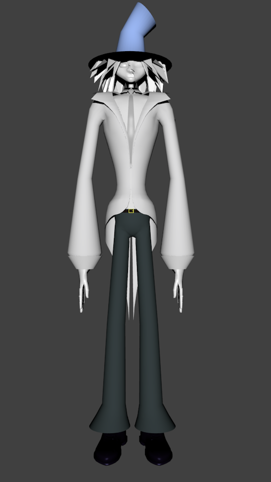
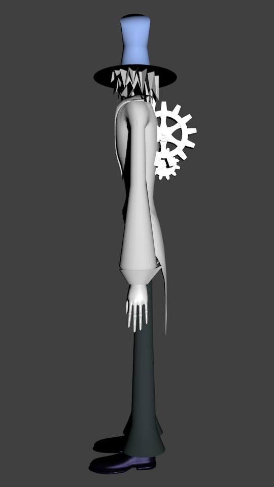
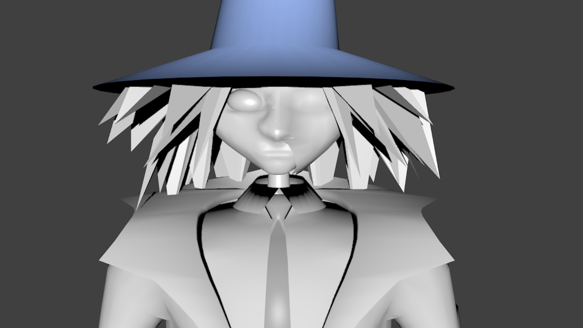
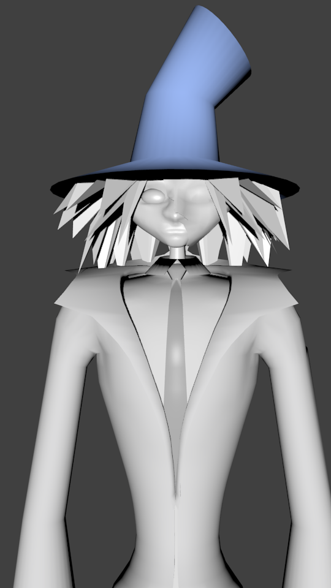

Clockwork Puppet
Not finished, abandoned in December 2013
Reason to create project:
This project was created in free time during creation of Beetle project.
I wanted to recreate one of the drawings I created some time ago.
About project:
Project was created in Blender, renders were made using Blender renderer.
Project contains unfinished mechanical humanoid. It is one of the first projects I ever created. Reason to abandon this project was ridiculously high triangle count (34 thousands) even for relatively simple model.
I wanted later to recreate it in Maya or in Blender but with much lower triangle count, but it didn't happen yet. But even it is not finished and has some flaws, I still like the shape and took of that puppet.
Renders:




Concept Arts: